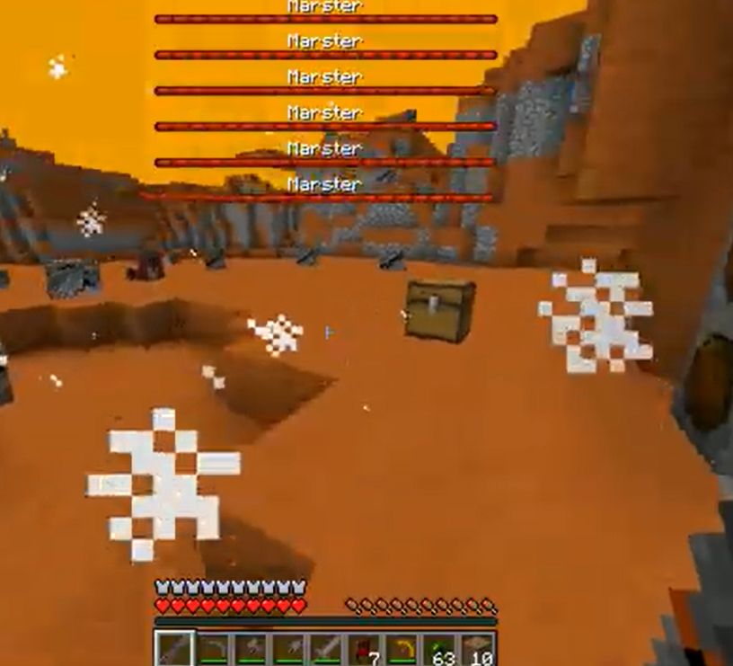

ch05 / backstory
Backstory
The "if anyone cares" tape. Who I am, where Inat Studio came from, and why it's named after a word for spite. It's been recorded over a few times, sorry about the tracking.
vhs doesn't have a side b. i know. let me have this.
0:00:00 start of tape
Press play
Hi. You found the backstory tape, which means you either clicked on everything or you actually wanted to know. Both are fine by me.
I'm Petar, one stubborn guy from Belgrade, Serbia, who doesn't know when to quit. Inat Studio is me. I make games, write research papers, and build apps and websites. This site is where all of it ends up, so it's all in one place.
0:03:12
Why "inat"
Inat is a Serbian word, and English doesn't really have one for it. Spite gets close. It's also stubbornness, pride, refusing to back down. Doing the thing anyway because someone said you couldn't, and then doing it a bit louder so they notice.
You do things "iz inata", out of spite. When people say it about themselves it's usually half a complaint and half bragging.
I named the studio after it because it's the most accurate word in any language to describe me. I'm stubborn, and I've barred myself from using the word "impossible".
It's also how most of this stuff gets finished.
0:09:47 bad tracking
Where it started
I started making things probably around age 2, when I invented a new word. The computer part came later, on a library PC in my elementary school.
The first thing I actually finished was a Minecraft mod about exploring space...
After that it was a few more years of modding, before I realized it's easier to create what I want by actually making my own things.
the first thing, found the tape

0:21:30
The research side
Not everything I make is a game. I study Software Engineering right now, and that's where the research papers come from.
The short version of what I work on: applying my current skills to whatever I find interesting at the moment, usually space stuff.
Where it meets the games: gamification of concepts, my beloved <3
The long versions (two papers so far) are on the research page, PDFs and all.
0:34:05
The current setup
What everything on here gets made with at the moment. Mostly for people who enjoy reading other people's spec lists.
- machine
- Laptop, RTX 4050, 32GB RAM, i7 13650HX
- engines
- Unity mostly
- code
- A bit of everything, best in C#, C++ and JS
- editors
- Rider, PyCharm, Visual Studio Code
- art + sound
- Aseprite, Paint.net, Photopea and whatever I can find online
- on repeat
- Farya Faraji, Skaldic Bard and divorced dad rock
- fuel
- Copious amounts of nicotine and caffeine
0:52:18 most recent recording
What's next
Right now I'm working on The Seventh Circle (the demo is out on Steam), and also on having enough money for gas. After that, having enough money to make a 3 meter tall tesla coil.
Longer term, the dream is unironically going to space.
If you want to make something together, or you just want to say hi, my contact info is on the misc page.
0:59:59 end of recording
Things that got me here in no order
Games, films and books that rewired something in my head. Not a top ten, just the ones that stuck.
Games
- Minecraft Been my go-to game since childhood for expressing creativity
- Factorio I am a nerd
- Ultrakill Arguably one of my favorite games aesthetic-wise
Films
- Interstellar Absolute peak
- Taxi Driver Me too bro, me too
- Neprijatelj It's demiurge o'clock!
Books
- The Brothers Karamazov A mind suffering from its own contradictions, trying to grasp the absurdity of existence
- The Myth of Sisyphus One can imagine Sisyphus happy ;)
- Thus Spoke Zarathustra I believe this one is self-explanatory
Stop / eject
That's the whole tape. If you made it this far you officially count as someone who cares, so thanks for that.
p.s. thank you, kind stranger ^^